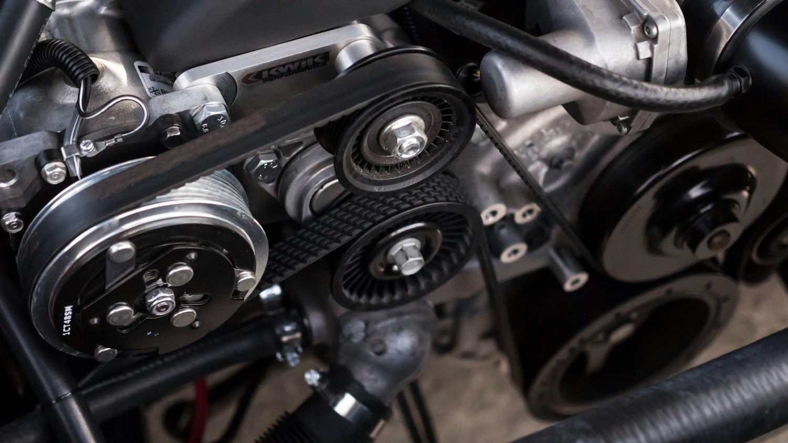

Oil & filter service
Fresh oil, a replacement filter, and a basic visual check of belts, hoses, and fluid levels.
From $65Sample conventional service
Maintenance without the mystery.
Everyday auto care, explained in plain language. From the morning commute to the next trip down the coast.
Find your next service ↗
01 / Know what’s under the hood
A focused menu for daily drivers. These sample starting prices help illustrate a clear service experience.
Fresh oil, a replacement filter, and a basic visual check of belts, hoses, and fluid levels.
Tire pressure check, tread review, and rotation to support more even wear.
A closer look at pads, rotors, and the symptoms you’ve noticed. Understand the findings before repair.
A diagnostic starting point for that dashboard light, with a clear explanation of recommended next steps.
All prices are fictional, before tax, and vary by vehicle and scope. Repairs, specialty oil, and parts may be additional. No actual service is available.
02 / No guesswork required
Soundside is an independent portfolio concept for a neighborhood auto shop. The idea is simple: make routine car care feel approachable, specific, and worth understanding.
Tell us what you hear or feel. We’ll explain the imagined inspection process, separate priorities from future maintenance, and show what a clear estimate could look like.
THE SOUNDSIDE STANDARD
Start with the symptoms.
A little listening goes a long way.
Show the next step.
A clear recommendation and an estimate.
Keep you in the loop.
No extra work without an agreement.
A service philosophy imagined for this portfolio.
03 / Before you roll in
This concept focuses on routine maintenance for common gasoline passenger cars and light SUVs. Specialty, diesel, and electric powertrain work are outside the illustrated scope.
The imagined shop would offer a small waiting area for scheduled routine maintenance. Longer diagnostics or repairs would use a planned drop-off.
This portfolio does not offer roadside assistance or repairs. For a real vehicle concern, contact an operating repair shop or roadside provider; do not use this form for urgent assistance.
04 / Your next mile starts here
Explore a simple appointment request. Share the service and vehicle details using fictional information.